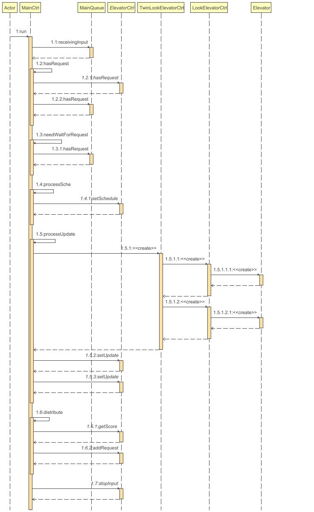

北航2025面向对象设计与构造第二单元总结
你好！本文章为该博客的第十二篇文章！
本文章包含北航2025面向对象设计与构造第二单元的博客作业内容，期望同学们通过本次博客作业对该单元内容有一定了解。
本文章已经投送至本单元博客作业！
可能你已经发现了，本文章并未在完成后被及时投送至博客中，所以这其实是一个有点失去时效性的填坑投稿……
需要注意的是，本文仅完全适用于北航2025OO课程，对于之前和之后的课程，课程部分内容可能会发生变动，发生冲突时请以当前课程为准！
以及，如果本文章涉及学术诚信问题，请第一时间和我联系，我将及时做出修改，谢谢支持！
北航2025面向对象设计与构造第二单元总结
前言
经过本单元的作业和反思之后，我所得出的最重要的经验是：解决问题的应该是好的设计，但好的设计来源于广泛持久的学习。
架构迭代过程与设计
架构迭代过程概述
架构总体设计
本单元作业整体架构如下：
- 参考了“生产者——消费者模式”，将输入和主调度器通过独立的请求队列进行分离；
- 主调度器下分设各个管理单电梯的调度器，将乘客选择电梯和乘客乘坐电梯分离；
- 设置抽象的电梯控制类（或接口），通过子类实现具体方法，保证电梯内调度方式的可扩展性。
- 分设电梯控制类和电梯资源类，由控制类负责资源类的资源调度，将电梯控制与电梯资源管理分离；
第一次迭代变化
此时尚未进行输入和主调度器的分离，请求队列放在主调度器中。
为比对ALS调度方法和LOOK调度方法的优劣，在初期就确定了给出抽象的电梯控制父类的设计。尽管后续设计中把ALS调度方法彻底抛弃了，但这个设计恰好同时解决了双轿厢电梯控制的问题，因此这是一个成功的设计。
第一次迭代后，类图如下：

第二次迭代变化
此时需要将临时调度引发的未完成请求传回请求队列中，所以需要将请求队列和主调度器进行分离。
由于临时调度的增加，一方面需要在请求队列中增加对临时调度请求，另一方面需要为电梯控制类加入处理该类请求的方法和调度过程，将其接入处理过程中。
由于电梯间调度需要主控自行控制，需要对各个电梯评分，因此给电梯控制类加入了评分方法，并设置了相应的模拟电梯运行的类。（此时ALS调度方法接近于被弃用，未准备完整的计算评分的类）
第二次迭代后，类图如下：

第三次迭代变化
第三次迭代中，在处理双轿厢电梯升级过程时，需要终止原有的电梯控制线程，因此，需要在原有的电梯控制类中加入由于电梯升级而终止线程的方法。
同时，双轿厢电梯控制类的控制也值得讨论。由于其本身由两个互相独立运行而又有所约束的电梯组成，所以需要两个线程来管理电梯资源，这就意味着双轿厢电梯控制类本质上是在控制两个独立的电梯控制类，由双轿厢电梯控制类来进行乘客的分配控制，由子电梯控制类关注电梯资源调度本身和对换乘楼层的处理。
（这里按理来说应该新开一个双轿厢电梯内的单轿厢电梯控制类，但是考虑到迭代需求相对简单，故在原LOOK电梯控制类进行了锁的扩展以同时完成原需求和新需求）
一个相对简洁（甚至有点偷懒）的设计细节是，在完成双轿厢电梯控制类的创建之后，双轿厢电梯控制类不需要运行额外的线程，只需要在请求到来时决定分配给哪一部电梯即可。
第三次迭代后，类图如下：

同时，UML协作图如下：

锁与同步的运用
考虑到本单元在使用多个锁时容易出现死锁问题，故在前两次迭代中仅选择使用 synchronized 块来进行同步互斥的保证。具体而言：
- 对于
MainCtrl，以及ElevatorCtrl的各子类的添加请求和发送停止输入的方法，使用synchronized进行修饰； - 对于各类中查询“是否存在未完成请求”与“是否可进入新请求”的方法，使用
synchronized进行修饰； - 对于
MainCtrl.run()中需要访问MainQueue的代码块，使用synchronized块进行修饰； - 对于
MainCtrl.run()和LookElevatorCtrl.run()中，不存在请求时需要等待的情况，使用synchronized块进行修饰。
在第三次迭代中，由于涉及双轿厢电梯占用同一楼层的情况需要进行维护，故额外维护一个类型为 Lock 的 floorLock 属性，在 LookElevatorCtrl.move() 方法中采用 floorLock ，以及采取让权等待的原则，保证换乘楼层仅存在一个电梯且不被长时间占用。
此外，对于非共享的各个变量，并未采用任何同步块，故锁的使用和同步块互不重合。
调度器设计
第一次迭代
由于此时乘客存在指定电梯的请求，故此时无需对电梯间调度做任何设计。
对于电梯内调度乘客进出的请求，在ALS和LOOK两种策略间选择采用LOOK策略（即，电梯倾向于保持自己的运动方向，仅在当前运动方向上无可接收的乘客请求，且电梯内无需要向该方向运动的请求时，电梯才会尝试改变运动状态），该策略在请求较多时效率较为优秀。
第二次迭代
此时对电梯内调度未进行任何修改。
对于电梯间乘客请求的分配问题，遵循如下原则：
- 尽量优先为优先级最高的乘客进行分配。
- 宁可晚分配乘客请求，也不能把乘客分配到过于拥堵的电梯。
- 期望所有电梯中最晚停止的电梯的停止时间最早。
因此，对调度器进行了如下设计：
- 每次尝试为优先级最高的乘客进行分配，若分配失败则停止分配一段时间；
- 分配乘客时，对于每个电梯，首先判断该请求是否可分配给该电梯，若可行则给出一个评分，最后将乘客优先分配给分数最低的电梯。
- 判断请求可以进入该电梯的要求为：
- 该电梯当前未处于临时调度中；
- 该电梯当前已接收未解决请求个数在12个以内；
- 该电梯在沿当前方向运动再折返一次之后，有机会使该请求进入电梯中。（即，该请求运动方向和电梯方向不一致，或者电梯尚未到达该请求当前所在楼层）
- 分数的计算方法为电梯从当前时刻开始，到完成所有请求的时间。
一句话总结：一个限制人数，防止多次折返，不允许乘客中途下电梯的影子电梯。
可以看得出来，这个调度思路实际上是最关注电梯运行时间的（直接的评价指标），其次是优先级带来的影响（优先取最高优先级的乘客），最后对耗电量实际上也有所关注（在不影响前述要求下，尽量使用最少的来回完成请求）。
第三次迭代
第三次迭代在调度方法上延续了第二次迭代的思路，并未进行较大的改变。
但是，由于双轿厢电梯的加入，使得一些情况下乘客不得不中途下电梯进行换乘。考虑到电梯开关门带来的时间开销，以及换乘电梯带来的耗电量开销，期望让乘客进行较少的换乘。
给出的解决方案是，将上述分数的计算方法调整为“完成所有请求的时间除以该乘客在本次乘坐电梯中实际运动的路程”，可以在一定情况下解决多次跨电梯换乘的问题。
bug检测与成因分析
在前两次迭代的强测与互测中，均未被找出任何bug。但在此时通过中测的过程中确实出现了一些修复bug的过程（主要是解决死锁）。
在第三次迭代中，我在互测找出他人一个bug，同时我的程序被找出了一个bug。我找出的他人的bug在于，在其程序短时间接收大量同时发送的请求时，会由于请求的丢失产生死锁。我产生的bug在于，在双轿厢电梯对换乘楼层的处理中，出现了“电梯此时停止，但电梯认为此时其仍在运动”的情况，导致其无法接收新的请求，当所有双轿厢电梯出现了这样的问题且不存在其他电梯时，便会产生无法接收请求的死锁。
在三次迭代中，我的debug方法是通过向标准输出中增加一些运行信息，通过检查运行信息的确实来定位引发死锁的位置。
此外，在三次迭代中，借助自行实现的评测机，我发现了大量手工构造样例难以解决的corner case，当然第三次迭代中的互测bug也证明了手工构造样例的重要性。
心得体会
在三次迭代中，我时常担心自己的设计会出现严重且难以修复的死锁bug，所以对于相当多的同步互斥的优化（比如读写锁之类的），我都没有选择采用。事后回过头来分析，虽然我确实做到了没有大的bug出现，但是也少了一个锻炼多线程能力的机会（当然，后来在OS课上又锻炼了回来）。
可能最大的一个冒险的决策就是，我选择采用了影子电梯的优化。
很难说以上所有的决策是否正确，也很难说采用这些优化后我的性能分是否真的会有所提升，但是这个单元确实平稳结束了。
结语
解决问题的应该是好的设计，但好的设计来源于广泛持久的学习。
我的意思是，我们总是需要多尝试应用所学的知识，才能把设计做的更为优秀，而非避开应用知识带来的问题。